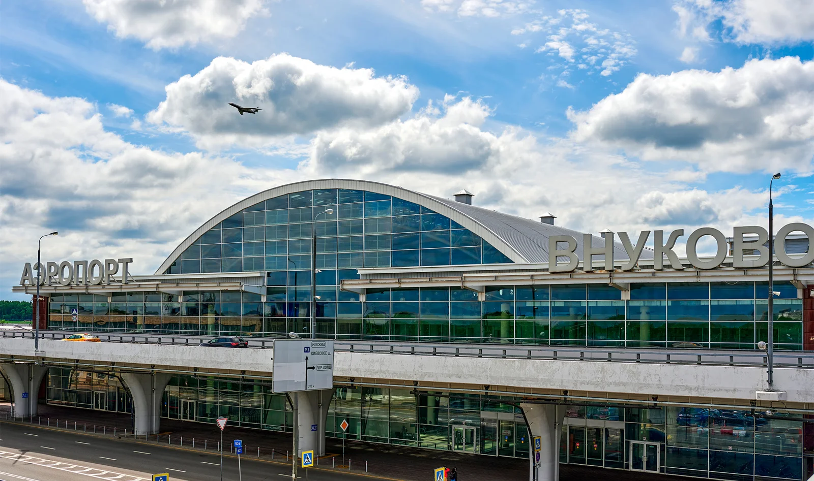
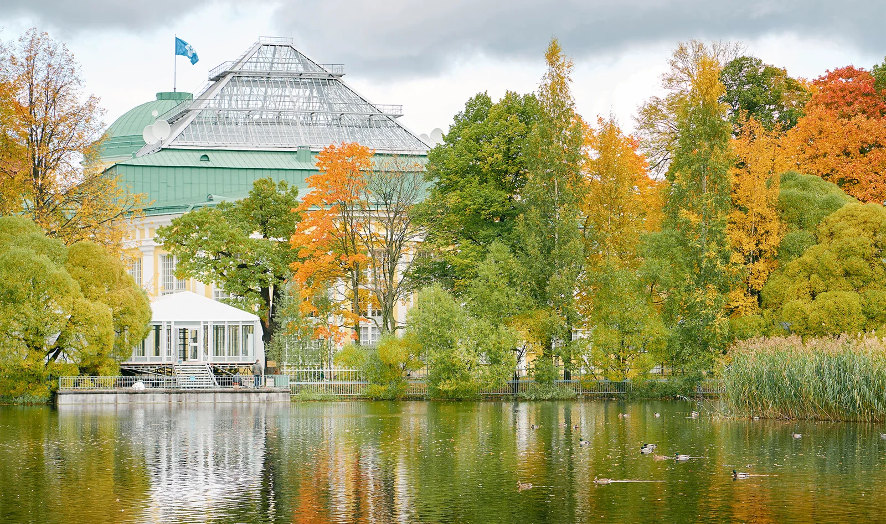

10 идей, чем заняться в Санкт-Петербурге осенью
Автор: Диана Акчурина
Варианты осеннего досуга в Петербурге. Идеи для сочетания прогулок, культурных впечатлений и более тёплых остановок в течение поездки.
Читать полную статью на блоге Островка →



Фото: SSV.Photo / Shutterstock.comИсточник изображения


Фото: afisha.ruИсточник изображения


Фото: Anna Anikina / Shutterstock.comИсточник изображения